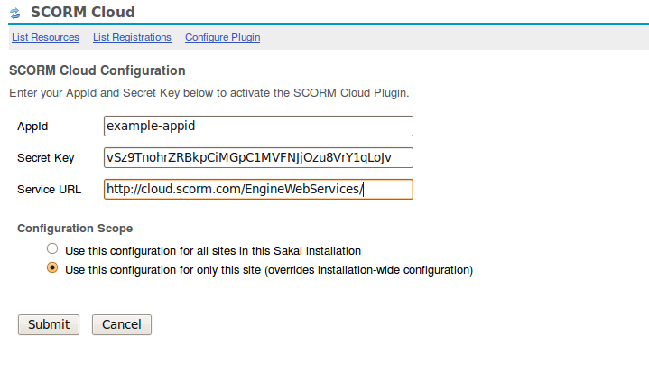
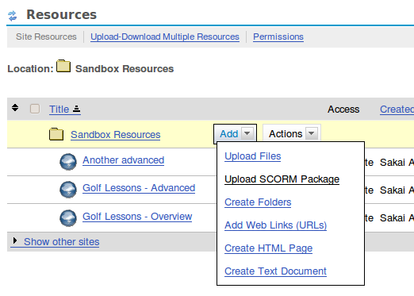
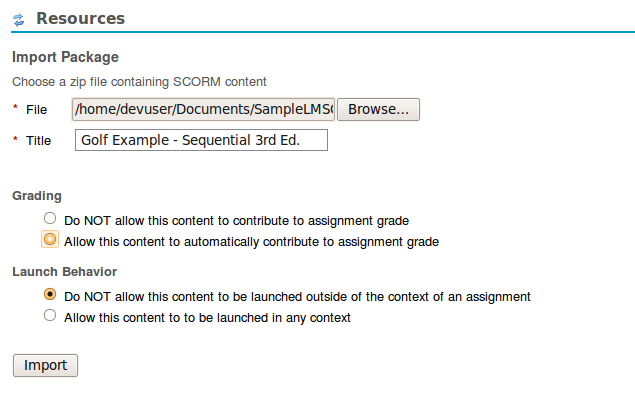
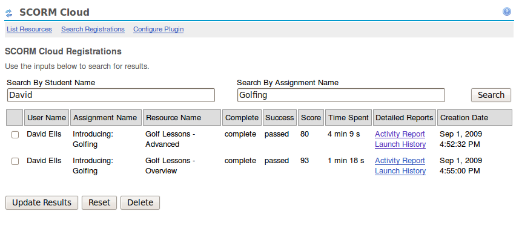
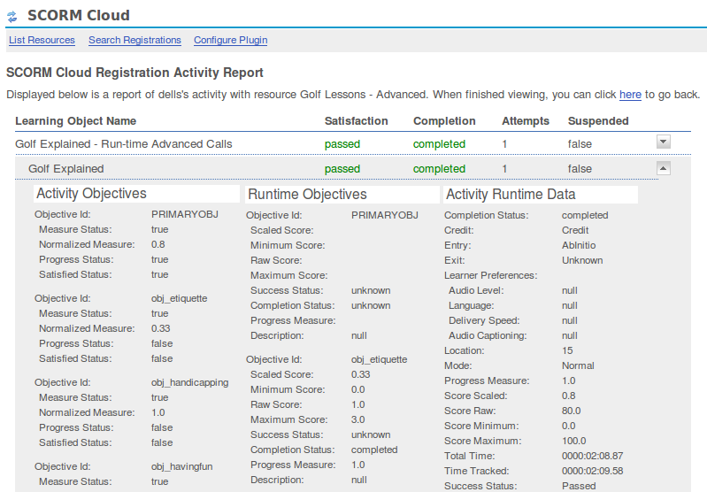

SCORM Cloud Plugin User Guide
Thanks for trying the SCORM Cloud plugin for Sakai. This plugin enables you to utilize SCORM content in your Sakai installation in a unique and useful way, with very minimal impact and hassle. The SCORM content, when uploaded, is hosted and played through the SCORM Cloud service provided by Rustici Software. Below, you'll see how to install, configure, and use the plugin.*
*The SCORM Cloud plugin was developed against Sakai version 2.6.0, and as of this
writing, this may be the only version for which a source distribution can be
successfully compiled against.
To install the SCORM Cloud plugin for Sakai from the packaged binary files,
you'll simply need to copy the following files/directories to the corresponding locations:
- scormcloud-pack (directory) -- ${CATALINA_HOME}/components/
- scormcloud-api-0.8.jar -- ${CATALINA_HOME}/shared/lib/
- scormcloud-tool.war -- ${CATALINA_HOME}/webapps/
If you're installing from source, you'll want to unpack or download the source code into your Sakai source tree, such that the scorm-cloud folder is at the same level as folders like "assignment" and "gradebook". Then change into the scorm-cloud folder and execute the command "mvn clean install sakai:deploy". When this completes, you should be ready to add the tool to a site and configure the plugin.
Once you've added the plugin to a particular site, there are two main steps to configure it. The first is ensuring that the right Sakai roles have the correct permissions for using the plugin, and the second is entering the some information related to the SCORM Cloud service.
Setting permissions for various tools is a typical Sakai administration task, and the permissions associated with the SCORM Cloud plugin are no different, so we won't go into detail about how to set permissions, but we'll instead note the permissions that are unique to the plugin below.
- scormcloud.admin: Any role with this security permission will be allowed to do nearly any activity with the plugin, such as creating, configuring, previewing, and deleting SCORM resources, as well as viewing and utilizing the interface found in the SCORM Cloud tool that will be linked to from the tool menu after installation. This role is intended for only site administrators (teachers and teacher assistants).
- scormcloud.configure: This is essentially the one separate permission from those granted by scormcloud.admin listed above. This permission must be granted in order to view and update the credentials used for the SCORM Cloud service. Typically, if those credentials will be installation-wide (used for all sites), a Sakai administrator will set them after installation and will have no need to grant this permission to any role. However, if credentials will be site-specific and not installation wide, an administrator will need to grant this permission to whatever role should be allowed to set those credentials for a given site.
Shown below is a screenshot of the interface for entering your credentials for use with the SCORM Cloud service. The configuration scope section refers to the concept noted above for installation-wide versus site-specific credentials. If set to installation-wide, these credentials will be used for all sites that utilize the SCORM Cloud plugin. Otherwise, these credentials will be used only for the current site.
Once the plugin is configured, you can use it to include SCORM Resources in your site, using the resources tool, as shown below. Clicking on Upload SCORM Resource will take you to the Import screen.
When creating a new SCORM resource, you just specify a SCORM content package in the file field, give the resource a title, and choose the options for associating with assignments. If the first option is activated, the resource will automatically compute and persist a score for the assignment to the gradebook. If you want a resource that can be accessed from anywhere, and not only when attached to an assignment, you'll want to select "Allow this content to be launched in any context". Otherwise, the content can only be launched in the context of an open assignment.
Now you can treat this SCORM resource as any other resource type in Sakai, with the follwing caveat. If you chose "Do NOT allow this content to be launched outside of the context of an assignment" when importing the content, a user can only launch the content when the resource is attached to an assignment, and only when that assignment is still open for the user (i.e. the user can still submit the assignment).
If you chose "Allow this content to automatically contribute to assignment grade" then any SCORM Cloud resources that have been attached to an assignment will equally contribute to an automcatically persisted grade for the assignment. An assignment has to have a gradebook entry for this to occur, so only point based graded assignments will have this behavior.
Beyond the resources, assignment, and gradebook integration, the plugin also comes along with a tool which can be accessed by roles with the "scormcloud.admin" security permission. Within this tool, an adminstrative role can see a list of the resources, and more importantly, list the registrations (i.e. an instance of a student accessing a SCORM resource) associated with a particular resource, or search the entire list of registrations by user and assignment.
There are a few actions you can perform on the list of registrations returned. Typically a registration's data is updated from the SCORM Cloud when exiting a resource, and when submitting an associated assignment. If for some reason one of these updates did not occur properly, you can use the "Update Results" button to update the selected registrations with data from SCORM Cloud. The reset button should be used to completely reset a registration, perhaps in the case when you would like to allow the user to retake a resource that may otherwise be unavailable to them (the availability in this context, once the resource has been launched, is specific to the rules of the actual content). Finally, the self explanatory delete button, will delete the registration. Note that updating, resetting, or deleting registrations here will not affect the grade that was persisted to the gradebook when the student last submitted the assignment.
Finally, there are a few detailed reports made available via the SCORM Cloud that provide an interesting view of each registration. The Activity Report shows a comprehensive view of all the SCORM data specific to the registration.

The Launch History report gives you a play by play of the SCORM calls
made by the content during a set of launches, and even includes a built in
glossary to help define what some of the terms mean in a SCORM context.
Thanks for checking out the SCORM Cloud plugin for Sakai! We hope you find it useful!